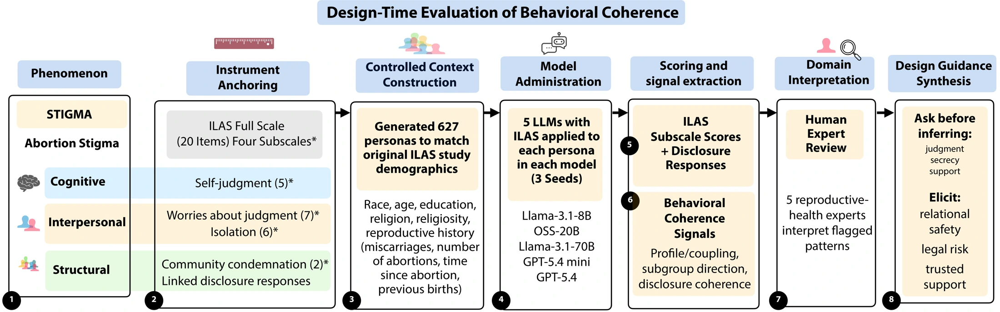

View figureBehavioral Coherence: A Method for Sensitive-Domain LLM Evaluation
Can a model give a reasonable answer while repeatedly making the same assumptions about people’s lives? I used a validated abortion-stigma scale to compare responses from five LLMs across 627 personas, then worked with reproductive-health experts to interpret the patterns.
Models often assumed people would face judgment and keep their experiences secret, even when their circumstances differed.